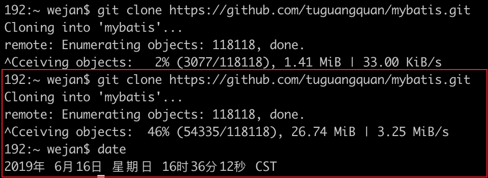
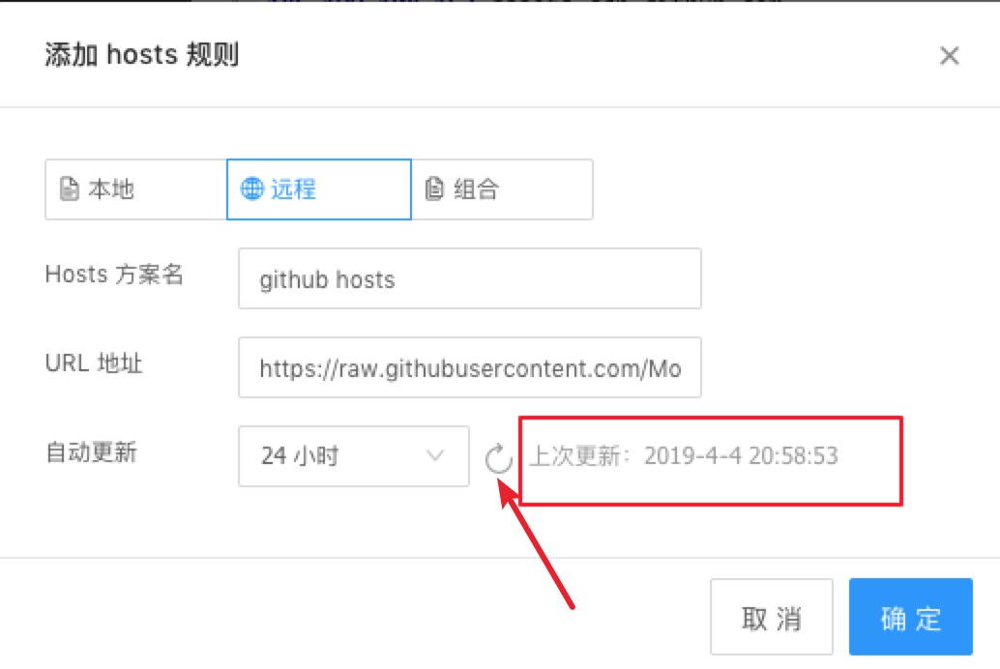
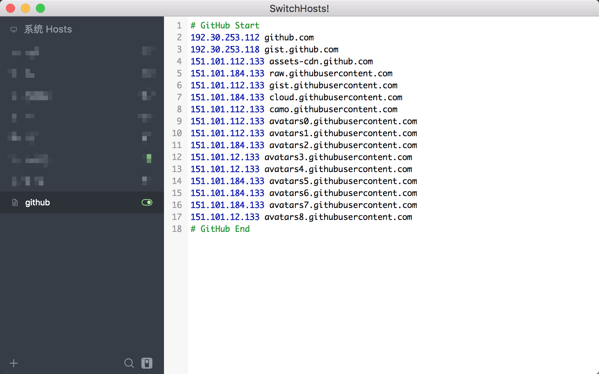

更新一下
2019年06月16日更新一下,没有配置之前的网速：
看评论有人说不好使，我在 mac 上本地测试了一下（未开启全局代理），红框之上是未指定 hosts 的结果，速度很慢，平均不到 50k/s 的速度，红框内是切换到最新 host 之后的结果，速度一直在增加，达到 3.25MB/s，效果显而易见。
Tips: 如果切换到最新 hosts 后还是很慢，可以重新开一个终端尝试，或者断开再重连一下网络，可能是 hosts 还未生效。（switch hosts 在 win 下需要使用管理员身份打开，mac 下需要输入开机密码获得权限）
加速访问
在网上搜索一圈，好多文章中提速的方法就是修改 git 的代理配置，前提是有 SS 之类的{代}{理}工具，然而我开了全局{代}{理}，设置了 git 的代理配置，clone 的速度还是很慢，只能到 30kb/s，如果库大点，下个几天几夜都可能😅
设置代理不好使，就继续搜索解决方法，在 github 上找到一个 issues，其中提供了 github 的 host列表。
GitHub中国加速访问
随着 issue 找到了一个生成 hosts 的 repo，但是这个 repo 的 hosts 并不是每日更新的，于是自己 fork 了一份，写了个简单 crontab，每日执行生成更新 hosts 文件。
仓库地址：https://github.com/Mosiki/github
食用方法
最麻烦的方式就是去手动修改 host 文件，最简单的方式就是下载 Switch Host 软件进行 host 修改，跨平台，因为 hosts 文件每日都会自动更新，所以需要本地的 hosts 也能自动更新， 好在 SwitchHosts 提供了远程 hosts 的功能。
复制如下 hosts 地址（测试发现GitHub的网址有可能访问不了，因而更换成了码云的镜像仓库地址）
https://gitee.com/Mosiki/github/raw/master/github_hosts.txt
1.新增远程 hosts
- 笔者在 mac 下操作，win 是同理。
设置自动更新
2.选择 24 小时即可，第一次添加的时候需要手动点击刷新按钮，刷新获取一下远程的 hosts

更新完成之后点击确定保存即可。
打开 hosts 开关

如图设置完，把开关打开就 Ok 了。
测试Clone速度
由 30kb/s 变成 4M/s 了 😂
修改后，在 GitHub 的 release 中下载东西也变快了。